המחברת.
מה היית משנה?
אפליקציה למעקב אימוני כוח, לפני השקה באפסטור. אני מחפש ביקורת אמיתית, לא מחמאות. אם יש לנו רק 10 דקות, אלה חמש השאלות שהכי חשובות לי:
- האונבורדינג: איפה אתה היית נוטש?9 מסכים עד שיש תוכנית במסלול "בנו לי". ארוך מדי?
- כסף: מנוי, תשלום חד־פעמי, או חינם בהתחלה?ואם מנוי, מתי מבקשים: באונבורדינג, או אחרי כמה אימונים?
- איך הבאת את 100 המשתמשים הראשונים שלך?ומה עבד הכי פחות טוב?
- הבדיקה של אפל: על מה נדחית, ומה הייתי צריך לבדוק לפני ששולחים?
- מה היית מודד מהיום הראשון?אילו מספרים אתה מסתכל עליהם כל שבוע?
מחברת אימונים
שבונה לך תוכנית.
למי: מי שמתאמן בחדר כושר 2–6 פעמים בשבוע ורוצה לראות שהוא מתחזק. היום רושמים במחברת, בפתקים או בוואטסאפ מהמאמן.
יומן אימונים מהיר
סט בלחיצה, טיימר מנוחה על מסך הנעילה, והאפליקציה זוכרת מה הרמת בפעם הקודמת. עובד גם בלי חשבון.
בונה תוכניות
כמה שאלות (מטרה, ניסיון, ימים, ציוד) ותוכנית מלאה שאפשר לערוך.
תוכנית מתמונה
מצלמים את התוכנית מהמאמן, מוואטסאפ או מקובץ, והאפליקציה קוראת אותה לבד. אפשר גם לייבא מ-Hevy ו-Strong.
חברים ופיד
עוקבים, לייקים, תגובות ותמונה מהאימון. כמו רשת חברתית קטנה של חדר הכושר.
"הגעת לחדר הכושר?"
כשמגיעים למקום שמתאמנים בו, האפליקציה מציעה להתחיל את האימון של היום.
בעתיד: מאמן ומתאמנים
מאמן בונה תוכנית באפליקציה ושולח אותה למתאמנים שלו. עוד לא נבנה.
קודם תוכנית,
חשבון רק בסוף.
בנינו אותו מחדש אחרי מחקר על Hevy, Strong, Fitbod ו-Duolingo. 4 דרכים להתחיל: יש לי תוכנית, בנו לי, תוכנית מוכנה, בלי תוכנית. כאן המסלול הארוך, "בנו לי תוכנית", כמו שמשתמש חדש רואה אותו.
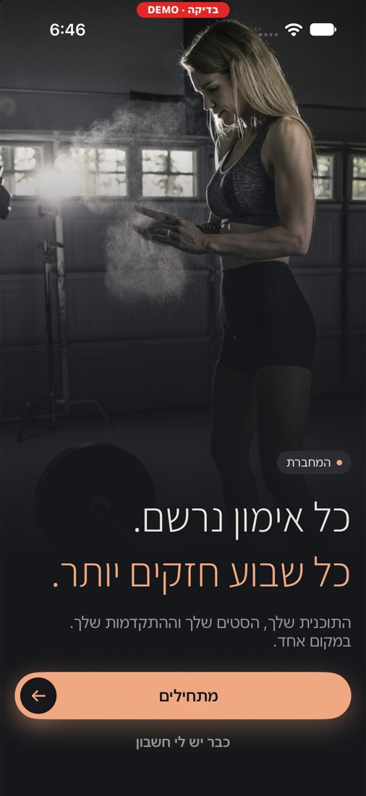
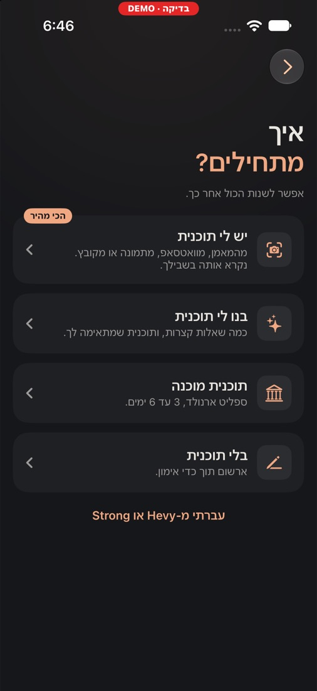
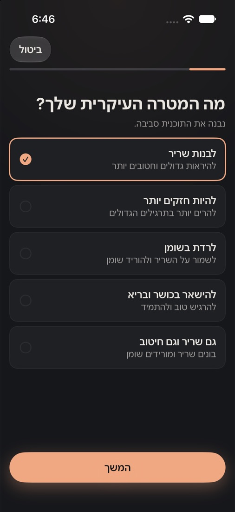
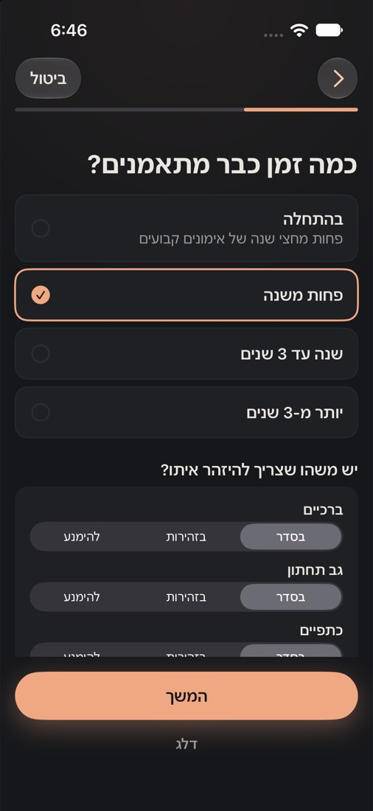
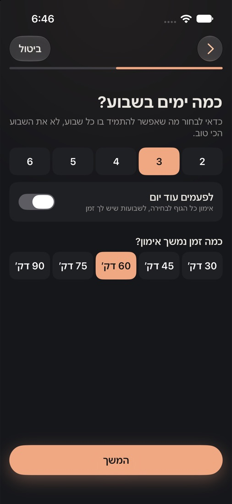
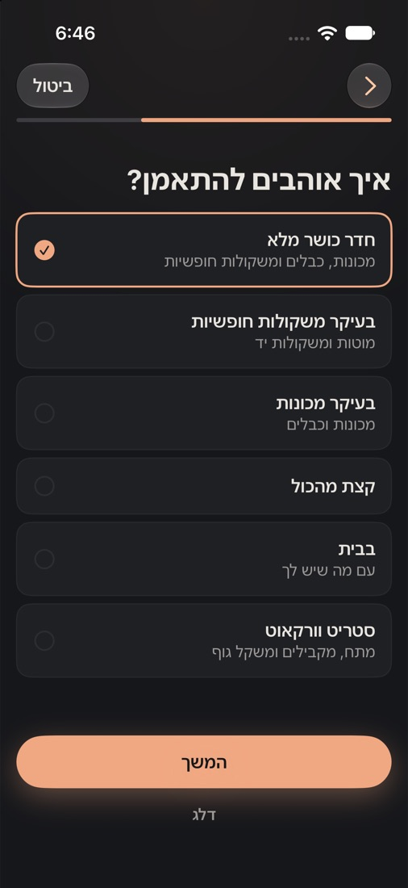
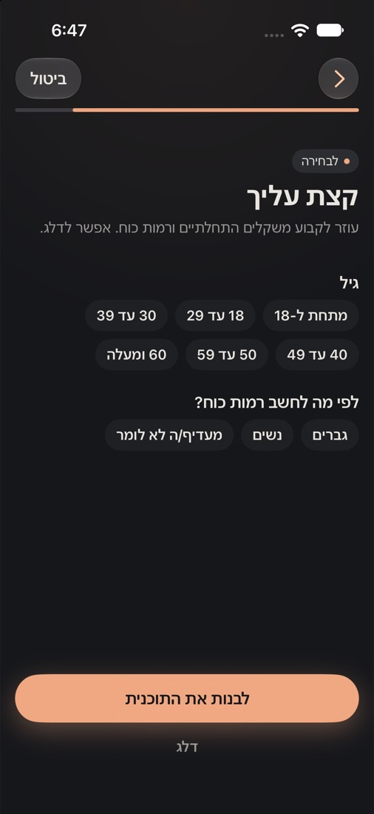
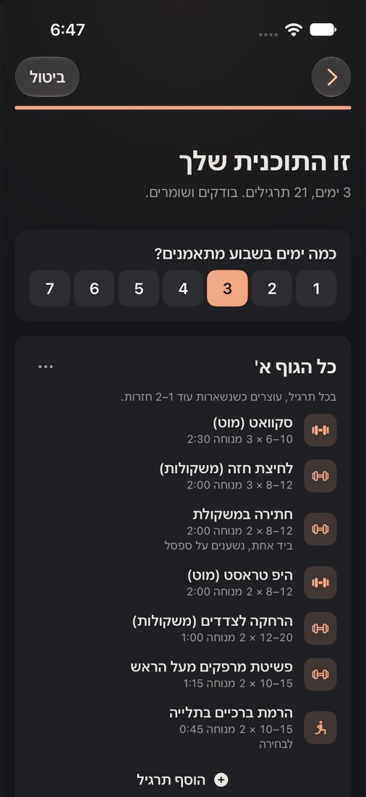
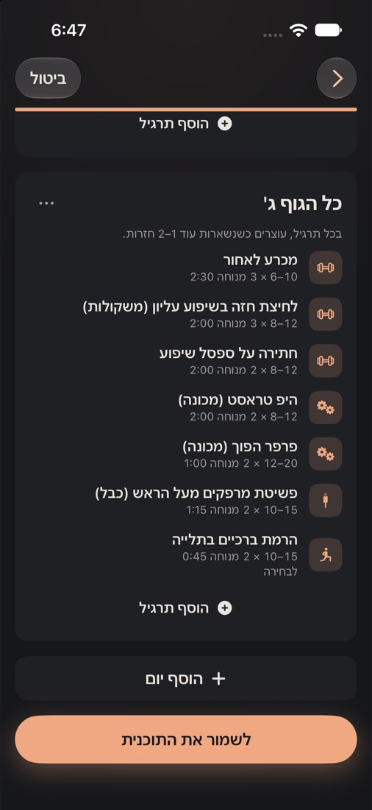
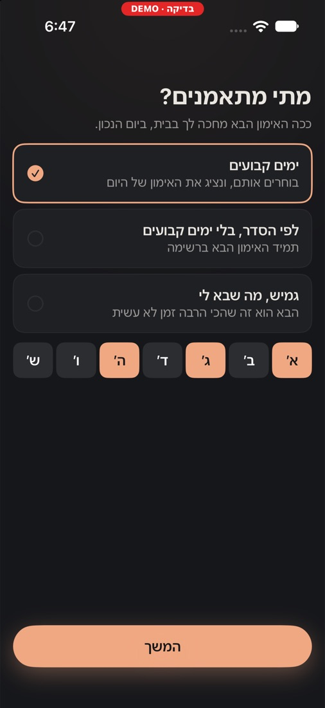
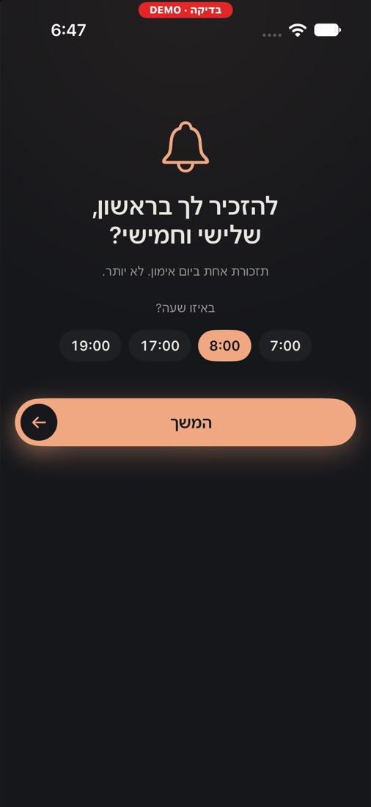
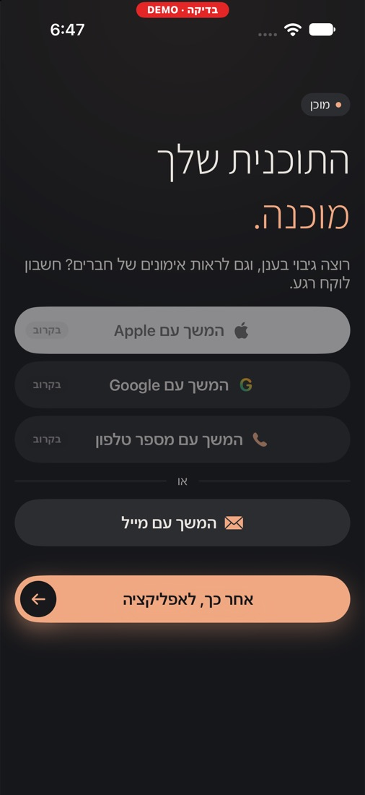
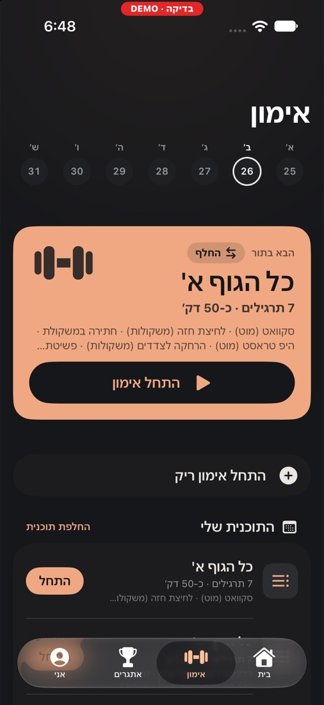
מה אני כבר רואה בעצמי
- ארוך: 9 מסכים עד שיש תוכנית. Fitbod שואלים בערך אותו דבר, Hevy כמעט לא שואלים.
- ימים בשבוע נשאלים 3 פעמים. במסך 5, שוב בתוכנית (8), ושוב בבחירת הימים (10).
- 3 כפתורי כניסה "בקרוב". נראה לא גמור, ואולי מפריע בבדיקה של אפל.
- באימון הראשון המשקלים ריקים (0). אולי להציע משקל התחלתי?
- אין עדיין רגע של "וואו" לפני השאלות. אין הדגמה של מה מקבלים.
מה שעוד לא בדקנו
- אנשים שלא מכירים את האפליקציה. עד היום ניסו רק ניל ומאור.
- כמה נושרים בכל מסך. עוד לא מודדים.
- איך מרגיש "יש לי תוכנית" עם תמונה אמיתית מהמאמן.
אפשר לנסות בעצמך: יש לי אפליקציית דמו בטלפון שמתחילה מאפס.
בחדר הכושר,
בלחיצה אחת.
מה שהמשתמש רואה 3–4 פעמים בשבוע. את הפיד והגלריה אראה מהטלפון שלי, שם יש חברים ואימונים אמיתיים.
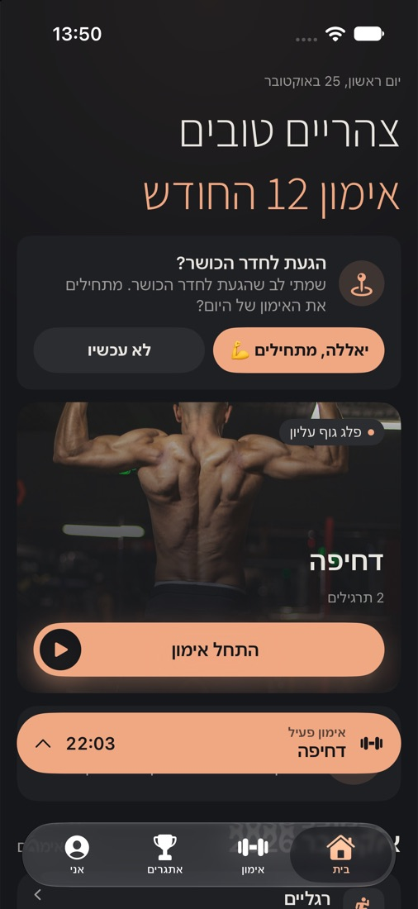
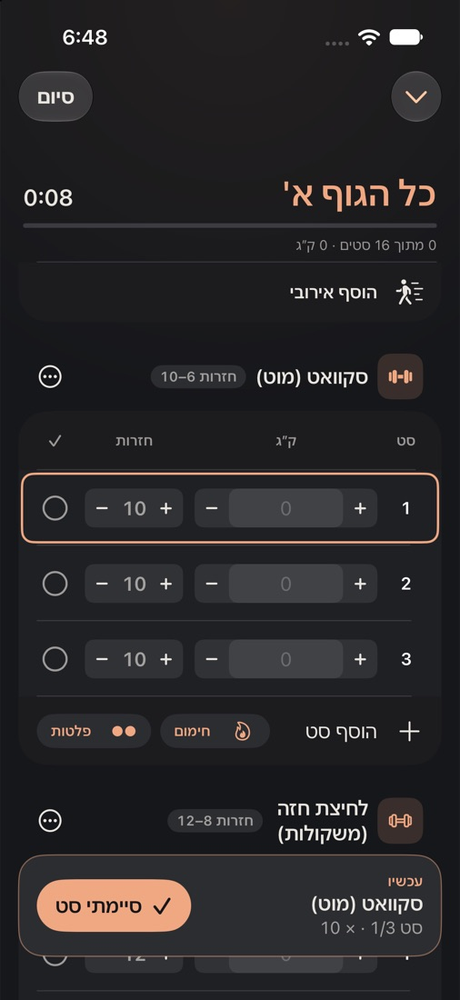
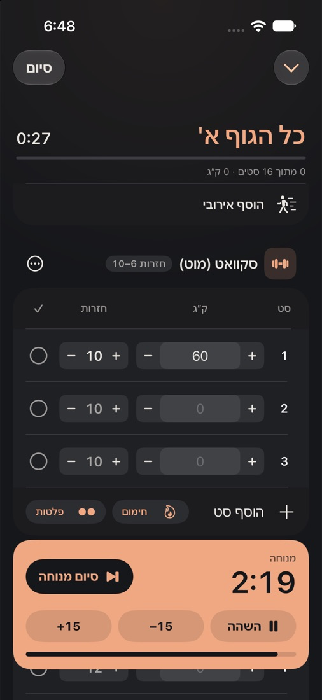
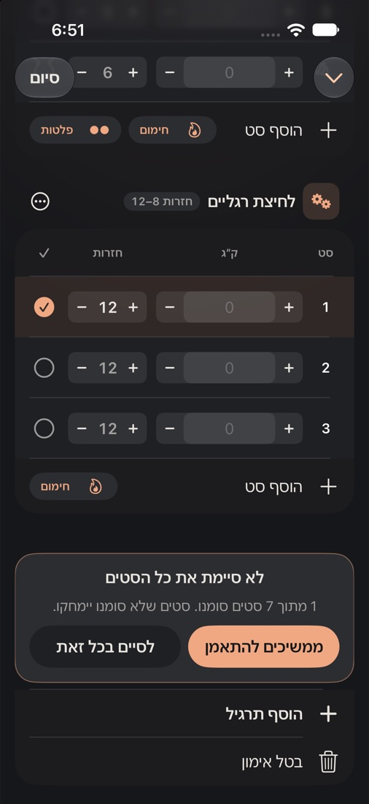
פיד וגלריה (מהטלפון)
כל אימון של חבר מופיע בפיד עם תמונה מהאימון. בהחלקה רואים מפת שרירים של מה שהוא עבד עליו. לייקים, תגובות, ולחיצה על התראה פותחת את האימון.
סיכום אימון (מהטלפון)
"אימון הושלם / 3 שיאים חדשים", ושלושה מספרים: דקות, ק"ג וסטים.
עוד לא החלטנו.
כאן אני הכי צריך אותך.
היום הכול חינם, בלי פרסומות. אלה האפשרויות שעל השולחן:
חינם, ומנוי למתקדמים
היומן חינם. בונה התוכניות, קריאה מתמונה וגרפים מתקדמים במנוי.
ניסיון ואז מנוי
שבוע או חודש חינם לכל דבר, ואז תשלום. נפוץ באפליקציות כושר.
חינם עד שיש משתמשים
משיקים בחינם, לומדים מה אנשים משתמשים בו, ורק אז מחליטים.
המאמן משלם
המתאמנים בחינם. המאמן משלם כדי לשלוח תוכניות ולעקוב אחרי המתאמנים שלו.
מה עובד,
ומה נשאר.
עובד
- יומן אימונים מלא, תוכניות, טיימר מנוחה ומסך נעילה
- בונה תוכניות, וקריאת תוכנית מתמונה, טקסט וקובץ
- אונבורדינג חדש (מאתמול בטלפון)
- חברים: פיד, תמונות, לייקים, תגובות, התראות
- שיאים, גרפים, מפת שרירים, שקילות ותמונות התקדמות
- גיבוי לענן, ועבודה בלי חשבון
- מה שאפל דורשת: דיווח וחסימה, מחיקת חשבון, מדיניות פרטיות ותנאי שימוש מפורסמים
- עברית ואנגלית
נשאר
- חשבון המפתחים של אפל (שילמתי, מחכה לאישור)
- גרסת בדיקה דרך TestFlight לחברים
- מיילים אמיתיים מדומיין משלנו
- כניסה עם Apple ו-Google
- חשבון הדגמה לבודק של אפל
- צילומי מסך ודף האפליקציה (הטקסטים כבר כתובים)
- החלטה על מחיר
- בדיקה עם אנשים שלא מכירים את האפליקציה
גרסה אחת בשבוע,
כל חמישי.
ככה אנחנו עובדים. כל רעיון חדש נכנס לרשימה ומחכה לתכנון של ראשון, כדי לא להתפזר לפני ההשקה.
הקצב השבועי
| יום | מה קורה |
|---|---|
| ראשון | 10 דקות תכנון: בוחרים 3–5 דברים לשבוע |
| ראשון–רביעי | עובדים רק על מה שנבחר. רעיון חדש נכנס לרשימה |
| רביעי | הקפאה: לא מוסיפים כלום, רק מתקנים |
| חמישי | גרסה חדשה בטלפון, ובדיקה לפי רשימה קבועה |
באג שמוחק נתונים או מקריס מתקנים מיד, בכל יום. שאר הבאגים נכנסים לגרסה של חמישי.
השבוע (25–29.10)
- האונבורדינג החדש (הותקן, נשאר לבדוק תמונה וכניסה עם חשבון)
- גלריה בפיד, "הגעת לחדר הכושר?", כפתור סיום חדש (הותקנו)
- בדיקה בטלפון של כל מה שעוד לא נבדק
- התמונות שלי באפליקציה. אני צלם. אני אשלח תמונות מפרויקטים שלי שקשורים לספורט, ונבחר מהן למסך הפתיחה ולכרטיסי האימון, במקום תמונות מהאינטרנט.
- חמישי 29.10: גרסה אחת עם כל מה שתוקן
עד ההשקה (הערכה)
| שבוע | מה |
|---|---|
| 25–29.10 | יציבות, עיצוב, אונבורדינג חדש, תמונות שלי |
| 1–5.11 | בדיקת האונבורדינג עם אנשים שלא מכירים את האפליקציה. אפיון "מאמן ומתאמנים" |
| 8–12.11 | ליטוש האונבורדינג ובונה התוכניות לפי מה שלמדנו |
| 15–19.11 | בונים "מאמן ומתאמנים" |
| 22–26.11 | החלק החברתי: ליטוש ובדיקה מלאה |
| 29.11–3.12 | הכנה לאפסטור: TestFlight, מיילים, חשבון הדגמה, צילומי מסך, ושליחה לאפל |
מה אני רוצה
ללמוד ממך.
1אונבורדינג והמרה
- כמה מסכים יש אצלך עד שהמשתמש מקבל ערך? מה קיצרת ומה הוספת?
- איזה אחוז מסיים אצלך את האונבורדינג? מה נחשב טוב?
- מתי לבקש חשבון: בהתחלה, בסוף, או רק כשצריך?
- מתי לבקש הרשאת התראות כדי שיגידו כן?
- איך בדקת אונבורדינג על אנשים זרים? כמה אנשים זה מספיק?
2הכנסות ומחיר
- מנוי, תשלום חד־פעמי או חינם? מה עבד אצלך?
- איפה לשים את מסך התשלום, ומתי להראות אותו?
- ניסיון חינם: כמה ימים? עם כרטיס אשראי או בלי?
- איך קבעת מחיר בישראל לעומת חו"ל?
- באיזה כלי השתמשת לתשלומים באפליקציה, ולמה?
3שיווק ומשתמשים ראשונים
- מאיפה הגיעו 100 המשתמשים הראשונים שלך?
- אינסטגרם, טיקטוק, מאמנים, חדרי כושר: מה היית מנסה קודם?
- כמה עלה לך משתמש, ומתי התחלת לשלם על פרסום?
- איך גורמים למשתמשים להביא חברים?
- דף האפליקציה באפסטור: מה הכי משפיע, צילומי מסך, שם או ביקורות?
4השקה ובדיקה של אפל
- על מה נדחית בפעם הראשונה?
- כפתורי כניסה "בקרוב": זה יעבור את הבדיקה?
- השקה שקטה לקבוצה קטנה, או השקה גדולה?
- כמה זמן לקח לך מ-TestFlight להשקה?
- השקה בישראל קודם, או בכל העולם מהיום הראשון?
5מדידה ואנליטיקה
- מה היית מודד מהיום הראשון?
- באיזה כלי אתה משתמש, ולמה?
- איך מודדים איפה נושרים באונבורדינג?
- אילו מספרים אתה בודק כל שבוע?
6שימור משתמשים
- כמה משתמשים חוזרים אחרי שבוע ואחרי חודש? מה נחשב טוב?
- מה החזיר אצלך משתמשים: התראות, מיילים, רצפים?
- איך מדברים עם משתמשים שעזבו?
- החלק החברתי (חברים ופיד) עוזר לשימור, או רק מסבך?
7טעויות שהיית מונע מעצמך
- אם היית מתחיל היום מחדש, מה היית עושה אחרת?
- על מה בזבזת זמן לפני ההשקה ולא היה שווה?
- מה היית עושה בשבוע הראשון אחרי ההשקה?
- מה הכי מפחיד אותך אצלי, אחרי שראית את כל זה?